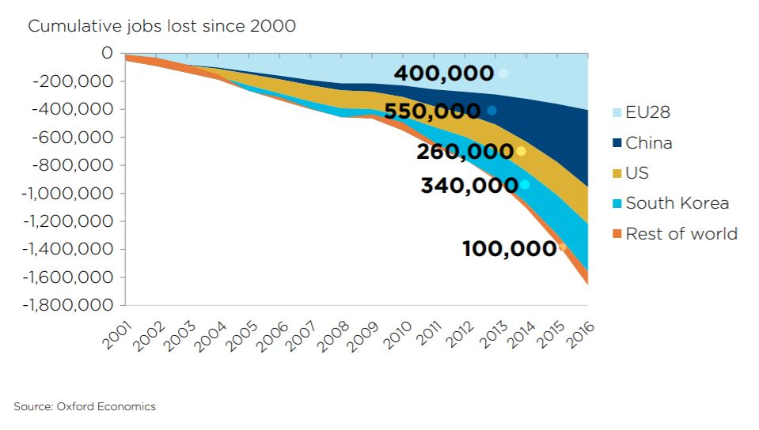

98% of all Packaging Machine Operators
95% of all Print Binding and Finishing Workers
93% of all Industrial Truck Operators
92% of all Production Workers
87% of all Food Preparation Workers
Assembly line robots has been around for 50 years.
Today, smart robots can be programmed by anyone to do anything.
81% of all Fast Food Cooks
77% of all Bartenders
77% of all Dishwashers
5 Best Robot Coffee Baristas 2020
Robotic Bartenders on Quantum of the Seas - Royal Caribbean:
According to a study from Oxford Economics (2019), there could be 14 million robots working in China by 2030.

Home